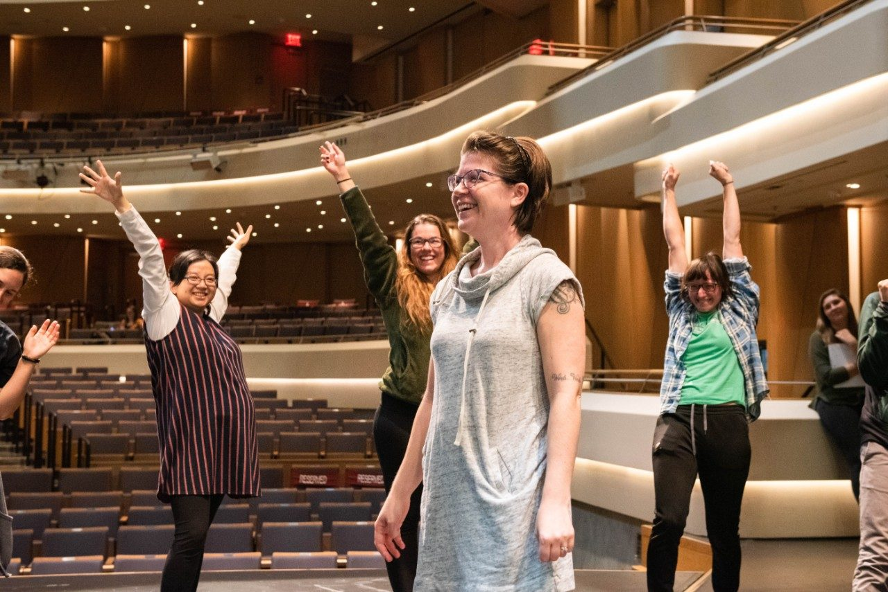

SciComm
Communicating Empirical Research to the Public
Nutshell Games Talk
I recently presented a talk about my dissertation research in under 90 seconds for the Nutshell Games, a speaking competition hosted by the Center for Communicating Science at Virginia Tech.
Preparing for the Nutshell Games
About a week and a half before the competition, I attended a workshop designed to help participants prepare to condense their research into a 90-second snippet that public audiences could understand. A story featuring a picture of me and fellow participants was published in the VT News.
Science on Tap
Science on Tap is an awesome, ongoing series of events in the Blacksburg, VA area where scientists communicate their research to the public. My husband, my dog, and I recently attended a presentation on dog behavior in which Boris, our beagle-Australian shepherd mix, got to participate! Read more about the event, including some commentary from yours truly, in this Roanoke Times article by Robby Korth.